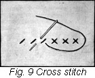
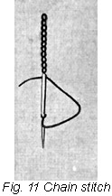
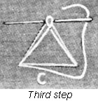
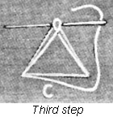

1926—The New-Way Course in Fashionable Clothes-Making
Lesson 14—Embroidery
Where Women Triumph
Way back in old tradition they tell of a queen who loved her spinning-wheel more than all the wealth of her realm. Hours long she sat before that crude bit of machinery, weaving the shuttle back and forth, slowly transforming linen and silk threads into perfect materials. And then with painstaking care, each piece of material was made into a dainty bit of wearing apparel.
Some gallant courtier remonstrated, it is told, and declared that the work she was doing was not "fit for a queen". Whereupon the queen replied: "Man creates that which is useful; woman creates that which is beautiful. I am a queen—but I am a woman also."
It is just an old, half-forgotten tradition—but perhaps it is in some strange way connected with the fact that old Europe has been and perhaps always will be, the center of the finest, most exquisite hand embroidery and hand needlework in the world. There is something significant in the fact that in these countries, where queens in early times sat hours before tiresome spinning wheels, they still boast among their peasant women of some of the most remarkable needlework ever accomplished by human hand.
But whether the tradition is true or not, we all know that there is something fascinating, something curiously delightful in transforming lifeless material into a thing of beauty. Men may combine mortar and brick and steel into huge skyscrapers. They may invent automobiles and aeroplanes. They may build electric railways and connect the continents with cables. But the woman in the home can take a piece of plain, ordinary material and with touches of vivid silk embroidery here and there, imparted with her own fingers, transform it into a thing of exquisite beauty! She can take a simple, unadorned frock of linen or silk and with no other tools except a needle and thread, transform it into a charming gown, as rich in art and beauty as any perfect painting.
The woman in the home may be justly proud of the part that her needlework plays in the creation of art and beauty.
What is Hand Embroidery?
In this lesson you are going to learn how to make "finishing stitches" as we shall call them—attractive embroidery stitches which will impart artistic touches to the things-to-wear you will make at home. Remember that needlework is woman's own particular art—and strive to master this lesson thoroughly.
But let us see just what we mean by hand embroidery—by needle-work. When the fish-bone needles were the only ones available, women used brightly colored threads to decorate their clothes. There wasn't much style or fashion, in those days, but even then woman's artistic taste expressed itself in a desire for ornamentation. She was not satisfied with only a covering—she wanted something attractive, something pretty. With her crude fish-bone needle and coarse colored threads, we find her outlining her clothes with long straight stitches. There was no attempt at design, no suggestion of originality. But with the advent of the steel needle and carefully roped skeins of silk in colors as gay as the rainbow, there came designs more intricate, more elaborate, more beautiful. And today, hand embroidery has reached its highest point of perfection.
To the simplest garment, hand embroidery imparts a certain note of distinction. The woman who wears a well-made dress with no trimming except an appropriate bit of hand-embroidery, reveals to us her love of the beautiful. We know simply by glancing at her dress that she has good taste. The very fact that hand-embroidery never goes out of fashion, is never frowned upon by the style authorities, proves its artistic value in the world of dress.
When to Use Embroidery
No matter how dainty and pretty a garment may be, it can always be made daintier and prettier with a touch of hand embroidery. But it must always be remembered that over-decoration, over-trimming of any kind is considered an ostentation—and anything ostentatious defeats its own purpose as it is an indication of vanity. When the dress or blouse has appropriate and sufficient trimming of its own, hand-embroidery detracts rather than adds to its charm.
Embroidery stitches are used extensively on dresses for infants and children. Dainty underthings are usually finished with a touch of hand embroidery, and fancy aprons invariably boast this type of trimming. There are many attractive embroidery stitches which may be used to great advantage on dresses and blouses, but one must know exactly how to make them, how to apply them, and when it is appropriate to use them. The purpose of this lesson is to teach you all these three things.
Hemstitching
One of the most frequently used embroidery stitches is the hemstitch. In most cases it serves both as a trimming and a finish but very often it makes a most effective finish when used in combination with lace or insertion. You should have no trouble whatever in learning how to make this stitch, as it is really quite simple. It consists merely in drawing together and separating a number of threads, as shown in the illustration. The sewing may be done by machine or hand, but of course the hand method is always the finest.
The type of hemstitching you do on the sewing machine, is really not hemstitching at all but only a simulation of it. It can only be made where two pieces of material are to be joined.
- Place a piece of heavy blotting paper or two pieces of thin blotting paper between the pieces of material to be joined. Stitch down the seam, using a loose tension on your sewing machine, and have the stitch regulated according to the width of the hemstitching desired. Fig. 1.
- Pull the blotting paper away.
- Press the seam open. Press back each edge of the seam, allowing the edges of the seam to separate as shown in the illustration.
- Stitch each turned edge on the right side very close to the edge and trim the edges. Roll close to the line of hemstitching and oversew. If one side is a hem, the hem may be turned to cover the one raw edge of the seam. Fig. 2. The upper edge of the seam may then be rolled and oversewed.
You now have a very fine simulation of hand hemstitching. But of course there can be nothing quite like the original—so let us see how hand hemstitching is made.
Hand Hemstitching
Only straight edges can be hemstitched. Threads must be drawn, and they cannot be drawn on curved edges.
- Decide just how wide you want your plain hem to be.
- Draw a thread where the top of the hem is to be. Now decide how wide you want your hemstitching to be and draw sufficient threads above the first one to give you this much space.
- When the threads have been drawn, turn a uniform hem and baste carefully. You must be quite sure that the top of the hem comes exactly where the first thread has been drawn.
- Use as fine a needle and thread as the material will allow. Begin at the left hand end of the garment and work to the right. Fasten the thread under the hem with a back stitch.
- Now you must determine how many threads are to be taken up in each group of hemstitching. With the hem held downward and toward you, bring the thread to the right; with the thumb of the left hand hold the thread in a loop near the point where threads are to be taken up.
- With the needle pointing to the left pass the point back of the group of threads and out to the left of the group, passing it through the loop.
- Draw the thread tightly and take a small hemming stitch through the hem at the right of the group of threads. You have made your first hemming stitch.
- Divide off exactly the same number of threads to the right of where the thread now falls with the point of your needle, pass the needle back of them and out through the left of the goods through the loop, and continue as before.
In making hemstitching, you must be careful that you always take up the correct amount of threads and that your stitches in the hem are always small and even. When you have learned how to make hemstitching perfectly you will be able to apply it to handkerchiefs, lingerie, children's clothes, and dresses and blouses for yourself. You will find it a most useful embroidery stitch.
Double Hemstitching
To make double hemstitching, proceed exactly as you did for single hemstitching. When the side with the hem is finished, hemstitch the opposite side, taking the small hemming stitches through the material. The double hemstitching holds the thread straight from top to bottom. When you are making a linen dress with hemstitching as its only trimming, this type of hemstitching is most appropriate. Fig. 4.
You can achieve a very pretty serpentine effect by taking up only half of the threads in the second hemstitching. To be more definite, first hemstitch the bottom edge as for ordinary hemstitching. Now instead of taking the same amount of threads on the upper edge, pass the needle back of half of the threads in the first group. Take a small hemming stitch in the material. Then pass the needle back of the next half of the threads in that group and half of the threads in the second group, stitching them together. Proceed in this manner, and you will have an attractive trimming stitch. Fig. 5.
Blanket Stitch
The blanket stitch, known also as the loop stitch, is one of the simplest hand stitches in all clothes-making. It is used as a finish on edges of woolen materials, especially flannels and blankets. It is also used as a finish on the edges of garments where the material does not fray and is too heavy to hem.
- Begin at the left-hand side of the work, securing the thread with two or three very small running stitches on the wrong side of the material about one-eighth of an inch above the edge.
- Hold the material over the left forefinger, both material and thread held down firmly with the thumb of the left hand.
- Insert the needle to the depth desired, drawing it up from under the material and over the thread, allowing the thread to form a loop beneath the needle and along the edge of the material.
- Place the needle a little distance from the first stitch and make the second stitch in exactly the same way. The stitches should be parallel, and care should be taken in fastening and beginning new threads to preserve the regularity. Continue along the edge of the material until the work is completed. Fig. 6.
- If desired, the depth of the stitches may vary, or they may be grouped together in different ways. Figs. 7 and 8.
The blanket stitch is most effective when used on the collar and cuffs of children's dresses—especially when a contrasting color thread is used. It also makes a neat and smart finish to overblouses and smocks and summer dresses.
Cross Stitch
This stitch is made by carrying one slanted stitch across the angle of another. It is really quite simple, but makes an effective trimming. It is used very often to mark undergarments and household linens, and one of its particular uses in clothes-making is to act as a foundation for dress trimmings.
- Begin with a backstitch on the wrong side of the material.
- Have in mind the size of the cross-stitch you wish to make; the two stitches should occupy a perfect square.
- Bring the needle from underneath at the lower left-hand corner of the square in which the cross-stitch is to be made. The illustration shows the proper way of placing the needle and carrying the thread.
- Always work in the same direction and cross the stitches in the same way.
Seed Stitch
Seed stitching, or seeding as it is sometimes called, is a simple method of filling in a leaf or part of a design. It is really nothing more or less than fine backstitching with a space the width of the stitch between the stitches. Its use is confined almost wholly to decorative effects on blouses and dresses. Let us see just how it is made, taking each step individually.
- First a short back stitch is taken on the right side of the material.
- Then a longer stitch, as long as you want it to be, is taken on the wrong side of the material.
- This process of long-short stitches continues until the design is covered. The stitches must be an equal distance from each other, and the rows evenly spaced.
- The stitches on the right side in each row should fall half way between the stitches in the previous row.
The Chain Stitch
If you have ever sewed before, you probably know what the chain stitch is and have used it. It resembles very closely the links in a chain. It is a very useful stitch, and though simple it is often ornamental when used for outline work. It should be made loosely, for it loses all its charm when the stitches are pulled tightly.
- Bring the needle through from the wrong side at the right hand end of the work.
- Working toward you, holding the material over the first finger of the left hand and the thread down with the thumb, insert the needle into the hole where the thread came up from underneath.
- Bring the needle out the distance of a stitch below, and over the loop of the thread. In other words, take a stitch through and over the thread. This forms a link.
- Place the needle again exactly where it was brought through from underneath and make a stitch and form the loop. In making each new stitch you must be sure that the needle is put inside the loop into exactly the same hole from which the thread comes out. And be sure, also that you take the same size stitch throughout.
- Fasten on the wrong side with two small backstitches.
Feather Stitching
The feather-stitch is so-called because it so closely resembles a feather. Though it is very simple to make, it is one of the most useful, practical and ornamental embroidery stitches. It can be interpreted in a number of interesting ways—in single rows or combinations of two or more rows—always presenting an attractive, pretty appearance.
The beauty of the feather-stitch depends wholly upon the evenness of the stitch, and upon the care exerted in following the design. Carelessly made feather-stitching has no charm whatsoever. Sometimes a design is stamped on the material as a foundation for the stitching, but more often just a pencil line or basting line is used. This guide should be carefully followed.
- Make a straight line with colored basting thread for the center line of stitching. With this line as a guide, you will have no trouble in making your stitches even.
- Bring the needle up through the material on the center line at the right hand end of the work. Hold the thread down on the line with the left thumb, and work toward you.
- Insert the needle a little to the right of this line and take a short slanting stitch toward the left. Draw the needle up through the material so that a loop of thread is formed under the needle.
- Hold the thread down on the center line and take a stitch of equal length on the left hand side and draw out as before. Continue until the work is completed.
- To
 make the double feather-stitch, simply take two stitches on each side at
a time, one a trifle lower than the other, but parallel with the first
stitch. To triple feather-stitch, take three stitches on each side. Figs.
13 and 14.
make the double feather-stitch, simply take two stitches on each side at
a time, one a trifle lower than the other, but parallel with the first
stitch. To triple feather-stitch, take three stitches on each side. Figs.
13 and 14.

Feather-stitching is used extensively as a trimming on collars, cuffs, blouses and underthings. It can also be used quite effectively on summer dresses and on heavier dresses for children. You will find that when used between tucks or lace, feather-stitching imparts a delightful effect that cannot be duplicated by any other embroidery stitch.
Observe garments for infants and note the many uses made of featherstitching. There is no embroidery stitch so attractive to use on infants' wear as the feather stitch. The hems of the dresses may be held in place by a line of this stitch made of rather fine embroidery cotton. The yoke, neck line and bottom of the sleeves may be finished with one, or two rows of this stitch. On the flannel petticoats, the French or flannel hem may be finished on the right side, using the feather stitch instead of a catch stitch as is often used.
Briar Stitch
Briar stitching is made in exactly the same manner as the feather-stitch except that a straight stitch is taken in line with the center line instead of a slanting stitch. Practice both briar and feather-stitching until you can use them both as attractive trimmings. Fig. 15.
Faggoting
Faggoting is used to join edges of material together, at the same time it adds a decorative note to the garment. It is perhaps a trifle more difficult than the embroidery stitches you have learned so far, but remember that practice makes perfect—and decide that you are going to practice until you are perfect!
- The edges to be joined should be basted to stiff paper, the edges separated the distance desired.
- Bring the thread up through the edge of the material.
- Draw the thread down diagonally to the opposite edge and hold it down with the thumb of the left hand.
- Place the needle through the under edge of the material, bringing it out through and over the thread held down by the left thumb.
- Proceed to the opposite side drawing the thread diagonally as shown in the illustration.
Faggoting used to join strips of lace insertion makes a very attractive trimming for lingerie. If a touch of color is wanted use colored embroidery cotton to make the faggot stitch.
Smocking
Every now and then Fashion decrees smocking as the newest embroidery stitch—and somehow it seems that there is always a distinct inclination towards this attractive bit of hand embroidery on children's clothes. It is rather an intricate sort of hand-sewing, but quite simple to make. Follow these step-by-step directions and you will have no trouble whatever.
- Stamp the material with the smocking design desired. (See end of this lesson for method of stamping designs.)
- Fold the material as for tucks on each of the dots, and baste one-eighth of an inch from the edge. Fig. 17.
- Beginning at the top of the first and second row of tucks, catch the two edges of the tucks together with three overcasting stitches taken directly over each other, exactly on the dots.
- Carry the thread downward under the tuck, skipping one row of dots.
- Bring the needle through at the dot and catch the tucks together as before
- Repeat until the first and second tucks are joined.
- Join the second and third tucks together, being sure that the overcasting stitches come on the dots between the rows of overcasting which joined the first and second tucks.
- Continue in this manner, joining tucks on alternate dots until the work is completed, then remove the basting threads which formed the tucks. Fig. 18.
Often a thread of contrasting color is used to do this work or a bead is sewed where the tucks are joined.
Couching
This form of embroidery is used most frequently on outline designs, borders and edges, and it may also be applied in making dress trimmings. You will find it very simple to make, but quite attractive.
- Couching is made by making crosswise stitches an equal distance apart over threads of heavy silk. Sometimes a cord is used, and sometimes several strands of the embroidery silk twisted together.
- The crosswise stitches hold the cord to the material. This is a very effective trimming when two colors are combined, and when it is used on a braiding design. Braid is often most attractive when applied in this way.
French Knots
Whether used alone, or in combination with other embroidery stitches, French Knots are decidedly attractive. They seem to add an unmistakable touch of the Parisienne to a dress or blouse, especially when colors that harmonize well together are used.
Never attempt to make French Knots on sheer material, as the knot is likely to pull through to the wrong side. And be sure when you do use this type of trimming, that you have a definite design marked or stamped on the material to follow.
- Bring the thread to the right side, exactly where the knot is to be.
- Hold the needle in the right hand, the thread between the thumb and finger of the left hand.
- Hold the point of the needle close to the place where the knot is to be and wrap the thread around the needle as many times as is necessary to produce the knot desired.
- Draw the thread quite tightly around the needle, still holding the thread, and place the needle very close to where it was first brought through.
- Now draw the needle through the material and secure the knot with a back stitch on the wrong side.
- If the knots are very close together, you can go from one knot to another without cutting the thread, but always finish each knot with a back-stitch if they are half-inch or more apart.
Satin Stitch
When made with care, the satin stitch has the sheen and appearance of satin. Each stitch must be parallel with the one next to it; the edge of the design must be mathematically even. Any break in the line of the design, no matter how slight, will spoil the appearance of the trimming.
Satin stitching is particularly popular because it can be applied to almost any material, from sheerest georgette to heaviest velvet. The stitches must be even and straight, but they may be as small or large as you desire. They must not be too close to overlap each other, or too far apart to show any separation between them.
Padding is almost invariably used with the satin stitch. Not only does it strengthen the stitch itself, but it produces a raised effect which is most realistic when the design is in the form of flowers or leaves. By padding is meant merely uneven basting stitches underneath the finished stitching.
- Stamp the design on the material.
- With small running stitches, outline the design carefully.
- Now pad between the outline stitches with uneven basting stitches, working in the opposite direction from which the design will be finished. Make your padding a trifle heavier in the center than at the edge to attain the prettiest results. Remember that a great deal of the beauty of the finished work depends upon the foundation—the padding is really quite important.
- Bring the needle up on the edge nearest to you at the right hand side of the work, on the line of design. Put the needle in on the opposite side, using care to place each stitch exactly beside the last stitch taken.
- The threads must just meet—they must not overlap or separate. If they are made evenly and parallel to each other you will achieve a splendid satiny effect.
- If the type of garment permits, place the part to be embroidered in embroidery hoops and bring the needle through straight up and down. You will find this method very convenient.
- Satin stitches may be made horizontal across the design or they may slant.
Practice the satin stitch carefully. Originate your own designs; outline them in pencil and decide what type of garment each design would be best fitted for. Then fill in the design with satin stitches, and practice over and over again until you can achieve a design that has all the lustre and sheen of satin.
You will find the satin stitch appropriate for leaves and petals, for heavy stems in embroidery designs, for flowers of almost every type, and in fact for practically every design that requires a smooth, attractive surface stitch. The satin stitch is also used extensively for embroidery of initials.
Scallop Edges
On many dresses as well as on household linens the scallop edge is used. The pattern is stamped on the edge to be embroidered, the scallops are outlined with small running stitches, the padding is laid in exactly as in the Satin Stitch.
- Begin at the left hand end of the work and work to the right.
- Fasten threads with two or three running stitches or a back stitch.
- Place the needle over and back of the top line of the scallop holding the thread in a loop with the thumb of the left hand.
- Bring the needle out through the loop and under the lower row of the running stitch. Repeat this stitch keeping a straight line on both center and lower points of the scallop, but separating the stitches slightly at the top and crowding them at the upper edge. These stitches must not overlap at any place but must lay smooth and flat.
Over-Hand Eyelets
Eyelets seem, somehow, to belong to children's clothes. On the gay little frock for school, the young miss likes to have rows and rows of tiny eyelets. On the better dress for important visiting occasions, an eyelet design combines very prettily with such trimmings as lace or embroidery insertion. And then, of course, there are the sheer, dainty underthings that claim eyelet embroidery as their very own.
- Stamp the design you wish to follow.
- Make small running stitches around the line marking the eyelet.
- If the eyelet is a small round one, punch with a stiletto and shape while you work. If a long or large round eyelet is used, slit through the center. A small amount of the material may be cut away if the eyelet is very large; but this must be done with extreme care to prevent cutting into the material. Shape the eyelet while you embroider.
- Overcast over the edge of the cloth and the running stitch. Do not allow the threads to crowd but have them close enough to make a smooth edge. The thread should be drawn tightly.
- Fasten the thread with loop stitches taken through the overcasting and not through the material.
Applique Work
As attractive as it is ornamental, applique embroidery bids fair to remain one of the most popular embroidery stitches used by the clothes-maker. It is really quite simple, too and you should have no trouble in following these directions.
- Baste any desired material over the garment to be appliqued.
- Stamp the design on the material that you have just basted to the garment.
- Baste very carefully with fine even stitches around the line of design. If you are working on silk or wool, it is best to do this basting with silk.
- Cut the material away outside this basting, leaving only the material included in the design.
- Buttonhole the design, taking stitches through both applied material and the garment. The buttonhole stitch appears on the outside of the garment and makes a very attractive trimming.
Crowsfoot
This stitch owes its name to its striking resemblance to a crow's foot. It is used most frequently on plain tailored garments. You will find it at the corners of pockets, at the ends of plaits, and in other parts of the tailored garment where an ornamental stitch is required to impart a smart finish and to add strength to the garment.
- Make a triangle the desired size with tailor's chalk, drawing the line from point to point with a slight inward curve.
- Use rope silk or twist for the embroidery.
- Begin
 at the lower left hand corner, and bring the needle through to the right
side.
at the lower left hand corner, and bring the needle through to the right
side. - Carry the thread upward, taking a very small stitch straight across the point at the top of the triangle. Fig. 25, A.
- Bring the thread downward to the lower right hand corner, taking a very short stitch across this corner of the triangle. Fig. 25, B.
- Take a short stitching across the lower left hand corner. Fig. 25, C.
- Continue in this manner, taking each stitch just below the one previous, exactly on the mark forming the triangle. Fig. 25, D.
- Fig. 25, E, shows the finished crowsfoot.

Arrow Heads
Like the crowsfoot, the arrow head is used most frequently on tailored garments. It serves the same purpose, also—adding a note of smart finish at the same time that it imparts strength to a spot where strain is likely to be felt. You will find arrow heads most appropriate for use on coats, suits and tailored dresses— especially as a finish to inverted or double plaits.
- Mark
 a triangle with small basting stitches the exact shape you wish the finished
arrow head to be. Fig. 26, A.
a triangle with small basting stitches the exact shape you wish the finished
arrow head to be. Fig. 26, A. - Bring the thread out from the underside of the work at the lower left hand corner of the triangle.
- Carry the thread upward to the point of the triangle, taking a very short stitch under the point. Fig. 26, A.
- Carry the thread downward to the right hand corner, take a straight stitch underneath bringing the needle out to the right of, and as near the place where the thread was first brought through, as is possible. Fig. 26, B.
- Carry thread upward and take a short stitch across and underneath the top of the arrow head, placing the needle so the thread falls outside the left hand diagonal thread. Fig. 26, C.
- Continue in this way, being sure that all stitches at the top of the work are taken outside of previous stitches. At the lower part of the work the stitches are taken on the inside of the previous stitches. Figure E shows the completed arrow head.

Bar Tacks
Bar tacks are used in tailoring to secure a strong fastening without adding a trimming.
- Be sure the thread is well fastened on the wrong side of the material and bring the thread through to the right side.
- Carry the thread upward the length of the bar tack, drawing it through to the wrong side.
- Continue taking stitches in this way, placing as many strands of the thread as are needed to make a bar as heavy as you planned.
- To finish, whip over and under the bar, catching the material beneath with each stitch.
- In making bar tacks, the stitches should be even and close together as absolute neatness is essential to achieve the tailored effect.
Use bar tacks at the ends of plaits at the corners of pockets, on garments for good service.
Tailor's Tacks
As a home clothes-maker it will be necessary for you to know how to make tailor's tacks. They are used in all construction work—before the garment is cut and never after. In marking the position of the perforations or other construction marks in a pattern, use the following method.
- Thread the needle, using a double thread. It should not be knotted.
- Take a straight stitch through the perforation, catching both thicknesses of the material.
- Draw through, leaving an end at least one inch long.
- Take another stitch in the same perforation and this will leave a loop one inch long.
- Proceed to the next perforation or mark, making loops in the same manner and cutting the thread one inch from the loop toward the needle. In long lines of markings, carry the thread from one mark to the next without cutting or breaking.
- After the garment is cut out, separate the two pieces by cutting the threads between the pieces. One-half of the marking thread will be left in each piece.
You will find the tailor tack method of marking garments extremely helpful and convenient in the making of dresses and blouses. Be sure you learn now how to make these time-saving stitches—so that you will not have to turn back to this lesson later in the course when you are actually making pretty things to wear.
How to Stamp a Design
Beautiful designs for embroidering can be purchased at very little cost. It is a very simple matter to transfer these stamped designs to the garments you wish to embroider.
You must always have a smooth, well-padded surface for transferring designs. If you spread a blanket or several thicknesses of soft material over your sewing table, it will serve the purpose excellently. Before proceeding with the actual transferring of the design, be sure that you cut off from the pattern all printing matter that you do not wish to appear on the garment.
Place the material on which the design is to be stamped flat on the table. Be sure that there are no creases or wrinkles in it. Now place the pattern directly over it being sure that it is exactly where you want the design to appear on the garment. Have a hot iron ready, and make sure that it is hot enough to insure a quick, accurate transfer of the design. Hold the pattern so that it cannot slip, and run the iron over the wrong side of the pattern quickly and with a smooth, easy motion. Cover every portion of the design. When you remove the pattern from the material, you will find that the design has been correctly transferred. Of course, the pattern cannot be used again—except as a guide for outlining a similar design in pencil.